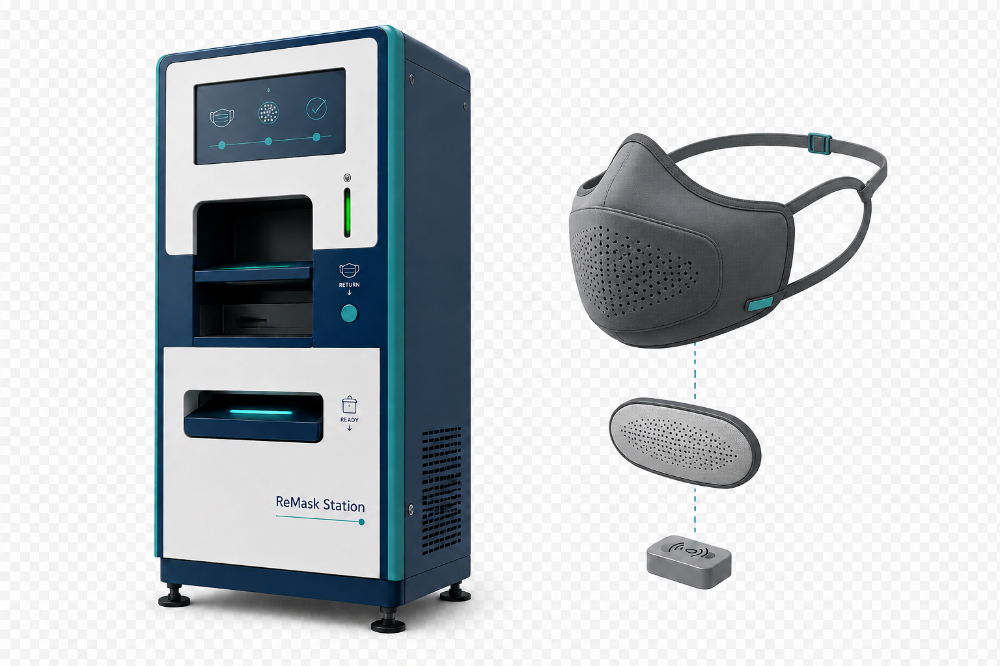

ขยะจากหน้ากากใช้ครั้งเดียว
เมื่อมีการใช้งานหน้ากากจำนวนมาก ปริมาณขยะจากอุปกรณ์แบบใช้ครั้งเดียวสามารถเพิ่มขึ้นอย่างรวดเร็ว
ระบบจัดการวงจรชีวิตของหน้ากากใช้ซ้ำอัจฉริยะ
รวมหน้ากากชนิดใช้ซ้ำ ตัวกรองแบบเปลี่ยนได้ ระบบตรวจสภาพ การติดตามข้อมูล และสถานีจัดการหน้ากากเข้าด้วยกัน เพื่อลดการทิ้งหน้ากากทั้งชิ้นโดยไม่จำเป็น
แนวคิดเพื่อการศึกษาและพัฒนา ยังไม่ใช่อุปกรณ์ทางการแพทย์ที่ผ่านการรับรอง

อุปกรณ์นี้เปิดโมเดล 3D ไม่ได้ ดูรายละเอียดได้จากรายการชิ้นส่วนด้านล่าง
ลากเพื่อหมุน · จีบสองนิ้วเพื่อซูม · แตะชิ้นส่วนเพื่อดูรายละเอียด
เลือกตัวเครื่องหรือหน้ากาก แล้วเปิดดูภายใน หรือแยกชิ้นส่วนเพื่อสำรวจโครงสร้าง
โครงสร้างภายในเป็นข้อเสนอเพื่อพัฒนาต้นแบบ ยังไม่ใช่แบบผลิตหรือผลทดสอบประสิทธิภาพ
เมื่อมีการใช้งานหน้ากากจำนวนมาก ปริมาณขยะจากอุปกรณ์แบบใช้ครั้งเดียวสามารถเพิ่มขึ้นอย่างรวดเร็ว
ในสถานการณ์ที่มีความต้องการสูง เช่น การระบาด อุปกรณ์ป้องกันแบบใช้ครั้งเดียวอาจเกิดภาวะขาดแคลนได้
การใช้ซ้ำอาจกระทบวัสดุ การกรอง และการแนบสนิท หากหน้ากากไม่ได้ถูกออกแบบและทดสอบรองรับตั้งแต่ต้น
ReMask ไม่ได้นำหน้ากากใช้ครั้งเดียวทั่วไปกลับมาใช้ใหม่ แต่เริ่มจากการออกแบบระบบสำหรับหน้ากากที่ตั้งใจให้ใช้ซ้ำตั้งแต่ต้น
โครงยืดหยุ่น ถอดประกอบ และตรวจสภาพได้
เปลี่ยนชิ้นส่วนกรองแยกจากตัวหน้ากาก
ระบุตัวตนและเรียกประวัติของแต่ละชิ้น
รับคืน ตรวจ จัดการ และตัดสินสถานะ
ReMask Station คือระบบจัดการวงจรชีวิต ตั้งแต่รับคืน ตรวจสภาพ แยกชิ้นส่วน ทำความสะอาด ติดตามประวัติ ตรวจซ้ำ และตัดสินใจว่าจะใช้ต่อ เปลี่ยนชิ้นส่วน หรือนำออกจากระบบ
เลือกขั้นตอนเพื่อดูรายละเอียดของกระบวนการ
ผู้ใช้นำ ReMask ที่ใช้แล้วกลับเข้าสู่สถานีผ่านช่องรับคืนที่แยกจากช่องจ่ายหน้ากากสะอาด
ผ่านเงื่อนไขและเข้าสู่กระบวนการจ่ายกลับ
ตรวจเพิ่ม เปลี่ยน Filter หรือประเมินใหม่
นำหน้ากากออกจากวงจรการใช้งาน
พบรอยแตกร้าว ฉีกขาด หรือเสียรูปอย่างมีนัยสำคัญ
Cleaning / Disinfection Cycle ไม่ผ่านเงื่อนไขที่กำหนด
ตัวกรองเสียหาย เปียก ใช้ผิดชนิด หรือเกินเงื่อนไข
เกินอายุที่กำหนดจากผลการทดสอบของวัสดุและระบบจริง
ทดลองปรับข้อมูลเพื่อดูหลักการจัดสถานะของต้นแบบ
เลื่อนค่าของแต่ละองค์ประกอบ ระบบจะถ่วงน้ำหนักรวมเป็น 100 คะแนน
ค่าทดลองเท่านั้น: น้ำหนักคะแนนและ Threshold ต้องปรับจากข้อมูล Validation จริงก่อนนำไปใช้ตัดสินในระบบจริง
ตัวอย่างการติดตามข้อมูลของหน้ากากแต่ละชิ้น
| Mask ID | Usage | Filter | Score | Status | Updated |
|---|
แบ่งการพัฒนาเป็น 4 ระยะ เพื่อให้ทดสอบแต่ละส่วนได้ชัดเจน
พัฒนาโครงหน้ากากแบบถอดประกอบได้ รองรับตัวกรองแบบเปลี่ยน และออกแบบตำแหน่งสำคัญให้ตรวจสภาพได้ง่าย
คลิกเพื่อทำเครื่องหมายหัวข้อที่วางแผนทดสอบแล้ว รายการนี้เป็นเครื่องมือวางแผน ไม่ใช่ผลทดสอบ
งานอ้างอิงช่วยกำหนดโจทย์และสิ่งที่ต้องทดสอบ ไม่ได้แปลว่าต้นแบบผ่านการรับรอง
อธิบายหลักการของ respirator แบบใช้ซ้ำ โครงหน้ากากที่ทำความสะอาดได้ ตัวกรองแบบเปลี่ยน และความสำคัญของ fit testing
อ่านแหล่งข้อมูลระบุให้ถอด filter, canister และ cartridge ก่อนทำความสะอาด facepiece เพราะชิ้นส่วนกรองไม่ควรถูกนำไปล้าง
อ่านแหล่งข้อมูลประเมินวิธีลดการปนเปื้อนหลายแบบกับ filtering facepiece respirators และชี้ว่าต้องพิจารณาผลต่อวัสดุและสมรรถนะ
อ่านแหล่งข้อมูลผลการศึกษาย้ำว่าการพิจารณาใช้ซ้ำต้องคงความสมบูรณ์ของการแนบสนิทและซีลของ respirator
อ่านแหล่งข้อมูลศึกษาการปฏิบัติด้าน cleaning และ disinfection ของผู้ใช้ elastomeric half-mask respirators ในหน่วยงานสุขภาพ
อ่านแหล่งข้อมูลเสนอให้ลดขยะตั้งแต่ต้นทาง และพิจารณาทางเลือกแบบใช้ซ้ำเมื่อปลอดภัยและสามารถดำเนินการได้จริง
อ่านแหล่งข้อมูลสิ่งที่ยังไม่ทราบต้องถูกระบุให้ชัด ก่อนพัฒนาไปสู่การใช้งานจริง
Maximum Reuse Count ต้องได้จากการทดลองวัสดุและระบบจริง
น้ำหนักคะแนนและ Threshold ต้องปรับตามข้อมูล Validation
ประสิทธิภาพ Filter ต้องตรวจด้วยวิธีมาตรฐานแยกต่างหาก
ตัวกรองที่ดีไม่สามารถชดเชยหน้ากากที่แนบกับใบหน้าไม่เหมาะสม
ระบบปัจจุบันเป็นแนวคิดต้นแบบสำหรับการศึกษาและพัฒนา
ประเมินเชิงคุณภาพในระยะแนวคิด โดยยังไม่ใช้ตัวเลขที่ไม่มีผลทดลองรองรับ
ลดการทิ้งหน้ากากทั้งชิ้นโดยไม่จำเป็น
เพิ่ม Traceability ของหน้ากากแต่ละชิ้น
ทำให้การใช้ซ้ำมีระบบตรวจสอบมากขึ้น
เปลี่ยนเฉพาะส่วนที่หมดอายุแทนการทิ้งทั้งชิ้น
ลดการพึ่งพาอุปกรณ์แบบใช้ครั้งเดียว
สร้างข้อมูลเพื่อหาจำนวนรอบที่เหมาะสม
ReMask Station ไม่ได้พยายามทำให้หน้ากากใช้แล้วทุกชิ้นกลับมาใช้ใหม่ แต่สร้างระบบที่รู้ว่าอะไรใช้ต่อได้ อะไรต้องเปลี่ยน และเมื่อใดควรนำออกจากระบบ
โรงเรียนบ้านคาวิทยา